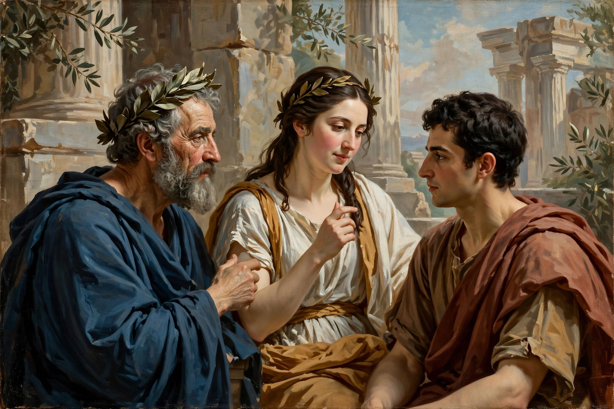

Figurative art

Figurative art, sometimes written as figurativism, describes artwork (particularly paintings and sculptures) that is clearly derived from real object sources and is therefore, by definition, representational. The term is often in contrast to abstract art.
Since the arrival of abstract art the term "figurative" has been used to refer to any form of modern art that retains strong references to the real world, and has been particularly used to refer to artists that return to depicting the human figure, even in a distorted or expressionistic way.
Definition
Figurative art is based on the representation of recognizable forms — the depiction of real things, especially human and animal figures, landscapes and objects — as opposed to non-objective or abstract art, which does not attempt to represent external reality. Formal elements such as line, shape and color are used in figurative work to render likeness, perspective and proportion.
History
Representation was the dominant mode of art from prehistory through the 19th century, from cave paintings and Egyptian art through Renaissance naturalism — in the work of artists such as Thomas Gainsborough and Sir Joshua Reynolds — to the academic painting of the 1800s. In the 20th century, movements such as Expressionism, Fauvism and Cubism distorted the figure without abandoning it, while Surrealism and Pop art continued figurative traditions in new ways.
After the dominance of abstraction in the postwar period, figurative painting revived strongly in the late 1970s and 1980s with Neo-Expressionism (Anselm Kiefer, Georg Baselitz) and painters such as Lucian Freud, Francis Bacon and Alice Neel, whose intense depictions of the human body became central to late-20th-century art. Contemporary figurative painting remains a major strand of art today.